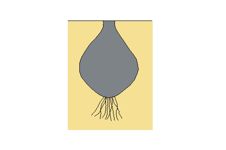

Bulb.
An underground organ comprising a short disk-like stem, bearing fleshy scale leaves, buds and surrounded by protective scale leaves; it acts as a perennating organ and is a means of vegetative reproduction.
Bulbil.
A small bulb or bulb-like organ often produced on above-ground organs.